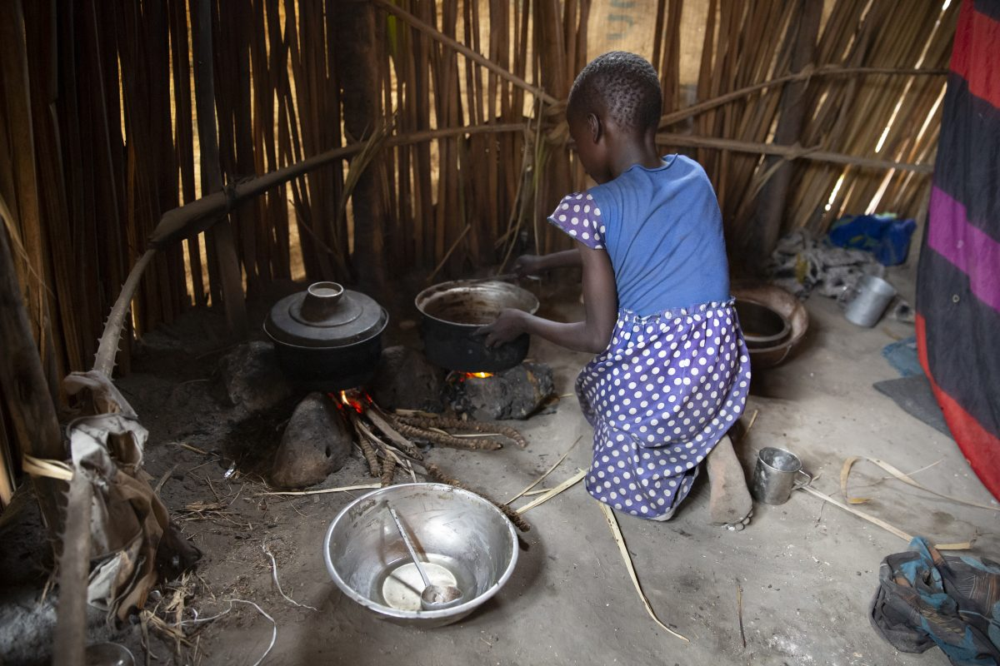
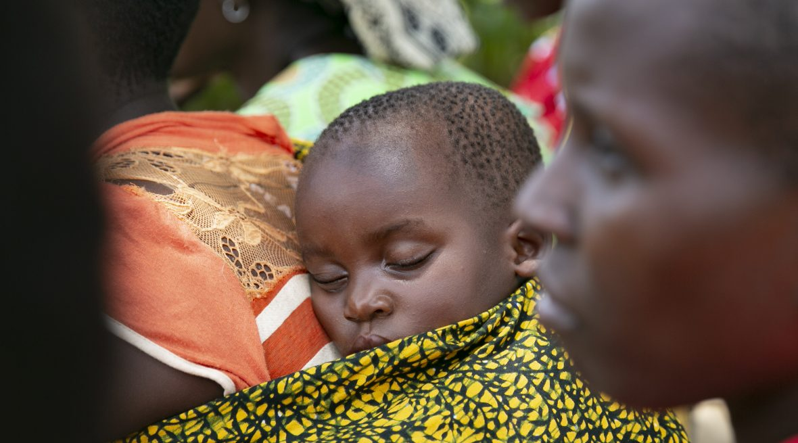
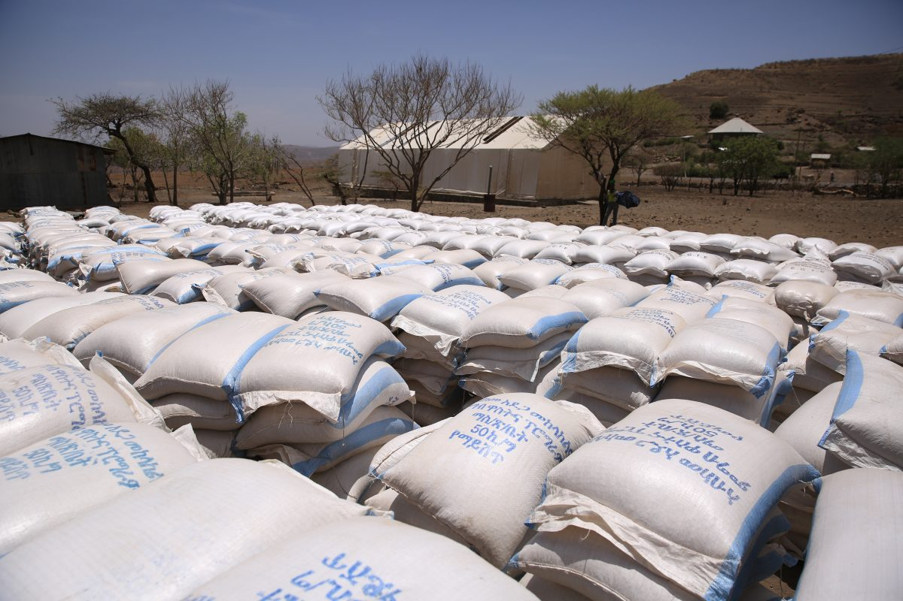
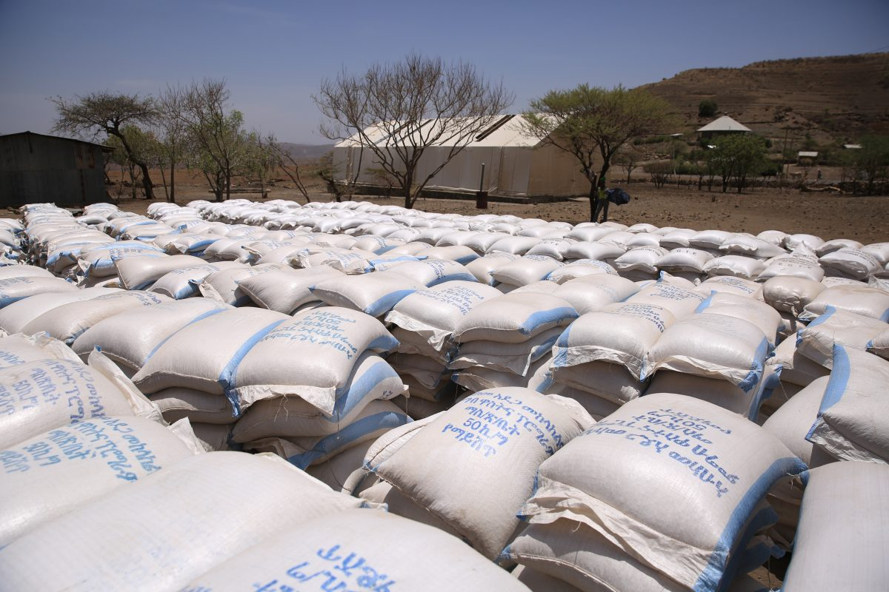

Seen through a purely economic lens, the continuing prevalence of global
hunger is bad for business. It inhibits productivity, slows economic growth, and
places unnecessary burdens on health and education systems. As a
humanitarian organization, that’s not what drives Concern’s mission, but the
data are useful in persuading others of the importance of achieving zero hunger.
On face value, “The Economics Of Hunger” seems like a fairly callous title for a piece of writing. After all, hunger is an extremely personal, physical,
and individual condition.
Most of us would probably equate economics with big-picture, faceless, impersonal statistics, graphs, and numbers.
But economies exist at every level, from global and national to community and household. In many parts of the world, hunger plays a key role in how these economies function. That in turn has a very personal impact on hundreds of millions of lives, both present and future.

Undisputed fact: poverty drives hunger. But hunger also plays a role in perpetuating poverty. In a series of studies under the banner “The Cost of Hunger in Africa,” a team of researchers has been assembling data in an effort to understand the influence of hunger on the economies of different countries. The studies mostly focus on how nutrition — or rather the lack of it — affects young children. So far, the findings confirm much of what experts already suspected.
and individual condition. Most of us would probably equate economics with big-picture, faceless, impersonal statistics, graphs, and numbers.But economies exist at every level, from global and national to community and household. In many parts of the world, hunger plays a key role in how these economies function. That in turn has a very personal impact on hundreds of millions of lives, both present and future.
Undisputed fact: poverty drives hunger. But hunger also plays a role in perpetuating poverty. In a series of studies under the banner “The Cost of Hunger in Africa,” a team of researchers has been assembling data in an effort to understand the influence of hunger on the economies of different countries. The studies mostly focus on how nutrition — or rather the lack of it — affects young children. So far, the findings confirm much of what experts already suspected.
Child stunting, caused by an ongoing lack of essential nutrients, is at the heart of this problem. We have a really good explainer piece on stunting here, but essentially it means a low height-for-age ratio in children under the age of 5 and reduced physical and cognitive development. It is one of the great tragedies of our time.
One of the first countries studied in the series was Malawi in Southern Africa, and the findings were stark. Based on the most recently available data, the COHA team estimated the national economy loses nearly $600 million every year due to the effects of child undernutrition. That’s more than 10% of Malawi’s GDP. And this information is not coming from outside agencies. This study was carried out by Malawi’s Ministry of Finance, Economic Planning and Development, with support from the African Union Commission and the UN.
60% of adults in Malawi suffered from stunting as children.
As you look elsewhere on the continent of Africa, the numbers get even bigger. In Ethiopia, with a population of 115 million people, the percentage of GDP lost as a result of undernutrition is 16.5%. That’s a staggering $4.7 billion each year. The studies break down the costs in terms of illness, deaths, school repetitions, school dropouts and reduced physical capacity in adults that can be directly associated to a person’s undernutrition before the age of 5.
The study on Sudan found that an estimated that 7.9 million people in the working-age population had suffered from stunted growth before reaching their fifth birthday. In 2014, this meant 25.2% of the population (age 15-64) were at a greater disadvantage than those who were not undernourished as children. The estimated annual cost to the economy? $2 billion. The good news is that Sudan has been making progress in recent years on reducing stunting. The bad news is that the COVID pandemic could erode that progress.
These statistics are depressing from an economic standpoint. More importantly, they represent an unquantifiable level of individual human suffering and heartbreak. Imagine as a parent knowing that your inability to adequately provide for your children means that they will never have a chance to reach their full potential.
Tom Arnold, Concern’s former Chief Executive and international champion of child nutrition, put it this way: “What is more unjust, more cruel, than condemning a child to a life of deprivation — especially when we know how to prevent it? Surely, if we know how to do so, and have the means to do so, there can be no reason not to do so. Urgently.”
 more cruel, than condemning a child to a life of deprivation — especially when we know how to prevent it? Surely, if we know how
to do so, and have the means to do so, there can be no reason not to do so. Urgently.”

more cruel, than condemning a child to a life of deprivation — especially when we know how to prevent it? Surely, if we know how
to do so, and have the means to do so, there can be no reason not to do so. Urgently.”

Solutions? There are many. But the fundamental issue of hunger’s negative impact on economic growth cannot be addressed without a comprehensive series of coordinated actions designed to eliminate child malnutrition. That’s what Sustainable Development Goal Number 2 was designed to do, and it now looks very likely that those targets will be missed. The international community has not only fallen behind on its commitment to affected individuals, it is missing out on a valuable opportunity.
Many organizations, including Concern, are dedicated to achieving zero hunger. Interventions ranging from improved agriculture practices to the promotion of breastfeeding to nutrition education for parents are many and widespread. Initiatives like the SUN movement have helped provide a platform for governments and agencies to work together. But the scale is still too small, and the progress is still too slow.
Aside from being the right thing to do, investing in the fight against child malnutrition makes economic sense. A 2019 report by Africa Child Policy Forum argues that for every dollar invested in reducing stunting, there is return of about $22 to be had in Chad, $21 in Senegal, and $17 in Niger and Uganda. That investment would help break the intergenerational cycle of poverty, and be key to releasing the brakes on economic development in affected nations and regions. Stronger economies mean more vibrant markets and less need for artificial supports and emergency interventions. It’s hard to see the downside of that outcome, through whichever lens you look.